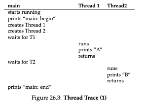
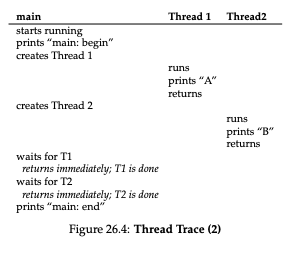
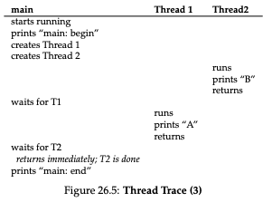
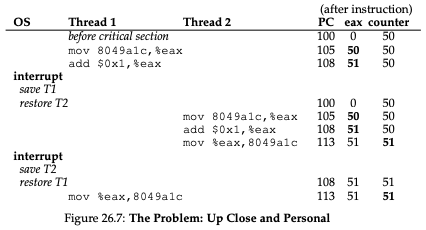

OSTEP: Concurrency and Threads¶
This is a summary of Chapter 26 (“Concurrency and Threads”) from “Operating Systems: Three Easy Pieces”.
Introduction¶
The chapter defines a thread as follows: “In this note, we introduce a new abstraction for a single running process: that of a thread. Instead of our classic view of a single point of execution within a program (i.e., a single PC where instructions are being fetched from and executed), a multi-threaded program has more than one point of execution (i.e., multiple PCs, each of which is being fetched and executed from). Perhaps another way to think of this is that each thread is very much like a separate process, except for one difference: they share the same address space and thus can access the same data.”
The state of a single thread includes a program counter and a private set of registers for computation. We save this state in a data structure called the thread control block (TCB), which is analogous to the process control block. A context switch saves the state of the thread currently running so that it can be restored later when we want to start running it again. In the shared address space, each thread gets its own stack.
Why use threads?¶
There are 2 reasons we need threads:
We can run threads over multiple processors in order to execute programs in parallel
We can enable multiple threads to run concurrently on a single processor
We could use processes for this too, but threads share an address space, which makes them more convenient than processes for programs that need to share data.
An Example: Thread Creation¶
Figure 26.2 shows an example of a multi-threaded program in C. I translate this program into Python:
import threading
def mythread(s):
print(s + "\n")
if __name__ == "__main__":
t1 = threading.Thread(target=mythread, args=("A",))
t2 = threading.Thread(target=mythread, args=("B",))
print("main: begin\n")
t1.start()
t2.start()
t1.join()
t2.join()
print("main: end\n")
There are multiple different execution orderings that are possible for this program depending on the operating system scheduler. You can even have “B” printed before “A”, because a thread that is created first is not necessarily run first. Here are 3 different possible execution orderings from Figures 26.2-26.4:



The Heart Of The Problem: Uncontrolled Scheduling¶
Consider the following assembly code:
100 mov 0x8049a1c, %eax
105 add $0x1, %eax
108 mov %eax, 0x8049a1c
We suppose that the value of the counter is stored at address 0x8049a1c. We load the value of the counter into the register eax, then add one to that register, and finally update the original value in memory.
Figure 26.7 shows what could happen:

Thread 1 loads the counter value into its register and adds one to it, but before it updates the value in memory, a timer interrupt goes off, the operating system saves the state of that thread to its TCB and pauses the thread. Then, the operating system chooses Thread 2 to run. Thread 2 reads the value of the counter from memory, which is still the original value, adds 1 to it and stores the result in memory. The operating system switches back to Thread 1 and executes the last instruction, which stores the same result in memory again.
The example demonstrates a race condition, because the output of the code above depend on the timing of the execution of the instructions.
The Wish For Atomicity¶
What we really want is to take the 3 instructions:
100 mov 0x8049a1c, %eax
105 add $0x1, %eax
108 mov %eax, 0x8049a1c
And have the hardware execute them atomically, i.e., as one unit. In other words, we want a “super instruction” like this:
100 memory-add 0x8049a1c, $0x1
It could not get interrupted, because the hardware would guarantee to execute the entire instruction in one step.
In the general case, we don’t have an instruction like that. Instead, the hardware provides a few basic synchronization primitives from which we build more advanced concurrent programs.
One More Problem: Waiting For Another¶
The discussion above focuses on “accessing shared variables and the need to support atomicity for critical sections”. Another common interaction between threads is that “one thread must wait for another to complete some action before it continues”, so we also have synchronization primitives to support not just atomicity but also this “sleeping/waking interaction” between threads.
Key Concurrency Terms¶
The chapter has an aside about the following Key Concurrency Terms:
A critical section is a piece of code that accesses a shared resource, usually a variable or data structure.
A race condition (or data race [NM92]) arises if multiple threads of execution enter the critical section at roughly the same time; both attempt to update the shared data structure, leading to a surprising (and perhaps undesirable) outcome.
An indeterminate program consists of one or more race conditions; the output of the program varies from run to run, depending on which threads ran when. The outcome is thus not deterministic, something we usually expect from computer systems.
To avoid these problems, threads should use some kind of mutual exclusion primitives; doing so guarantees that only a single thread ever enters a critical section, thus avoiding races, and resulting in deterministic program outputs.
Sources¶
Chapter 26 (“Concurrency and Threads”), Operating Systems: Three Easy Pieces, https://pages.cs.wisc.edu/~remzi/OSTEP/threads-intro.pdf accessed on 2/1/2022